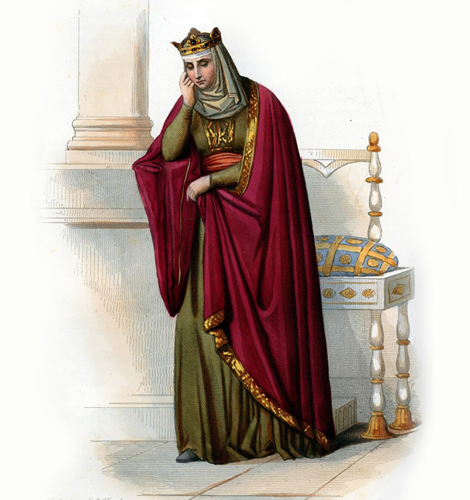
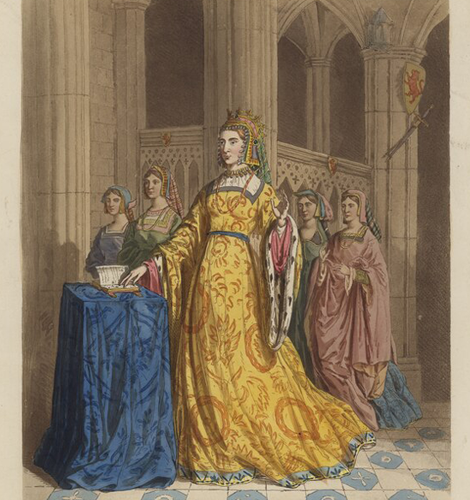

NATIONAL GEOGRAPHIC

Meet 5 of the fiercest queens from medieval times
HISTORY & CULTURE

- 
- 
During the turbulent, pestilent-ridden Middle Ages, kings dominated the Western world, fighting wars, making alliances, and aggressively holding onto their power. But hidden away in the annuls of history, five strong queens used their exceptional skills, political savvy, and tenacity to exert power in unexpected, and often disastrous, ways. Among them, several served as regents for their underaged sons (and grandsons and great-grandsons); one married not one but two influential kings and helped run their kingdoms (before divorcing them); and one ruled when her unhinged husband-king couldn’t. Here are their fascinating stories.
Queen Brunhilda of Austrasia
Born around 543 a.d., Brunhilda was a Visigothic princess who in 567 married the Frankish king Sigebert I, becoming the queen of Austrasia (which encompassed parts of present-day northern Germany, France, Belgium, the Netherlands, and Luxembourg). But there were some messy family relations. Her older sister, Galswintha, who had married Siebert’s half-brother Chilperic, was brutally murdered at the request of Sigebert’s mistress, Fredegund. Brunhilda launched 40 years of vicious warfare against her in revenge.
After Sigebert was assassinated by poisoned daggers circa 757 (probably on Fredegund’s orders) and Brunhilda was thrown into prison in Rouen, she managed to return to Austrasia where her young son, Childebert II, had been proclaimed king. She thus ruled as regent, essentially becoming Austrasia’s power behind the throne. Among other things, the adept leader repaired old roads, commissioned churches and abbeys, built fortifications, and restructured the army and tax system remember, this was during the aftermath of the fallen Western Roman Empire.
When Childebert II died in 595 at age 26, Brunhilda resumed control as regent for her two grandsons. But this was no doting grandmother. Politically ruthless, she kept her favorite grandson busy with concubines so he wouldn’t marry and challenge her power.
This however, finally caught up with her. In 613, the son of her long-standing rival Fredegund accused the nearly 80-year-old queen of killing 10 Frankish kings and sentenced her to death. It is said that she was torn apart by wild horses and her remains were burned, leaving no trace of the spirited queen.
Queen Eleanor of Aquitaine
In 1137, 15-year-old Eleanor of Aquitaine’s father died, bequeathing to her the vast duchy of Aquitaine. And just like that, she became the most powerful and most eligible young woman in 12th-century Europe. She went on to become queen to two kings: Louis VII of France in 1137; and when that marriage failed 15 years later, Henry II of England, whom she eventually also divorced. Strong-willed and capricious, she participated actively in the administration of each kingdom and deftly managed her own domains.
Eleanor’s true grit, however, came after she sided with her children over her second husband in a revolt, and Henry arrested her. She spent over a decade under house arrest in England, invisible and powerless. But when he died in 1189 and her son, Richard the Lionheart, became king, she took on the greatest political role of her life, acting as regent when he set off on the Third Crusade. She successfully kept the kingdom intact, fighting off her power-hungry son John.
When she died in 1204 at the monastery at Fontevraud, the nuns wrote in their necrology: She was a queen “who surpassed almost all the queens in the world.”
Queen Blanche of Castile
Blanche of Castile, Eleanor of Aquitaine’s granddaughter, was dealt a challenging blow when her husband, the French king Louis VIII, died in 1226. Their 12-year-old son, King Louis IX (Saint Louis), was too young to rule, so she served as regent for 14 years. She quelled rebellions, fought territorial disputes, created local militias, and engaged in open warfare to support the rights of her son as well as to promote the unification of France (not to mention, preserve her own role in a world that didn’t support a woman ruler). When Louis IX came of age in 1236, she handed him a peaceful, flourishing kingdom but remained by his side as a fierce supporter and advisor.
But perhaps her greatest triumph occurred when she was 60 years old in 1248, and Louis marched off on Crusade, leaving her to rule the kingdom once again. When he was defeated and imprisoned, she sought his ransom. She also signed laws, presided over council meetings, and cared for Paris’s poor. When she died in 1252, Louis lost not only his mother but his greatest supporter.
Comments :
- john Very good
- john Very good
Leave a Reply
Your email address will not be published. Required fields are marked*
Related posts:
-
Horned screamer
Over the course of their lives, these birds grow long, white spines of cartilage in the middle of their foreheads. Some birds possess horns approaching six inches in length. No other birds on earth have anything like it.
View article -
Togo slippery frog
This small and powerful amphibian is part of a family that goes back 70 to 80 million years, to the time of the dinosaurs. The Togo slippery frog ranks 18th in the hundred most genetically distinct and critically endangered in the world
View article -
Puerto Rican crested toad
The Puerto Rican crested toad is the only toad species native to Puerto Rico. Named for the bony crests above its large, golden eyes, this toad is also identifiable by an upturned snout and bumpy skin that feels like it’s covered in pebbles
View article